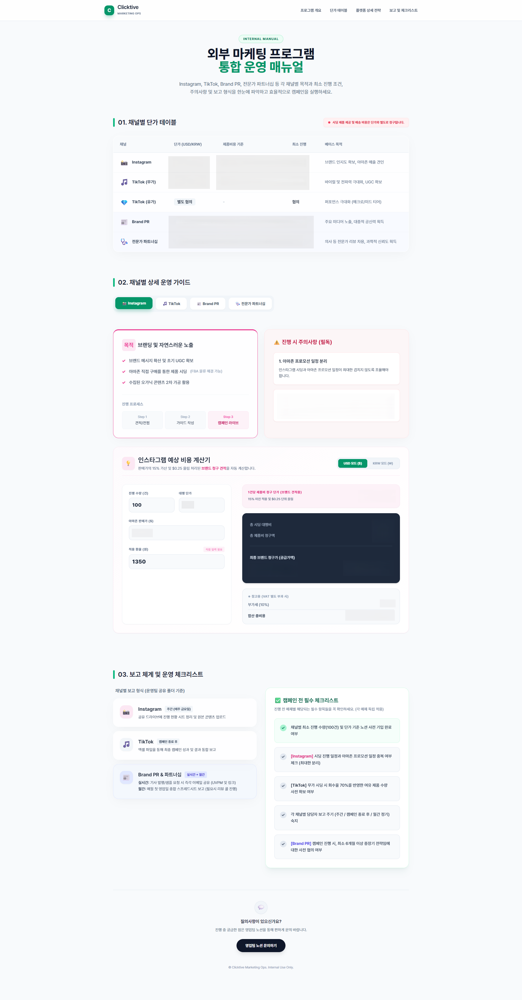
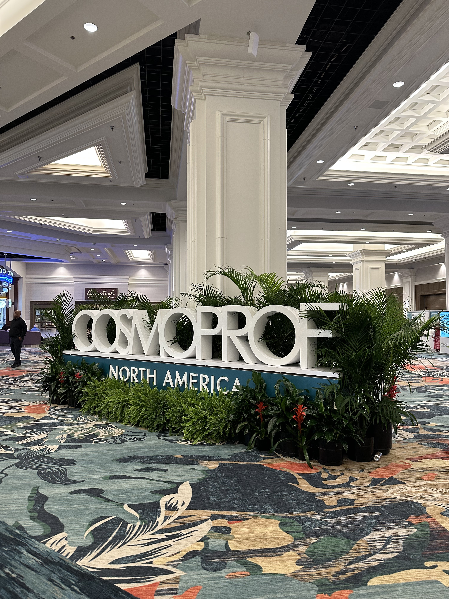
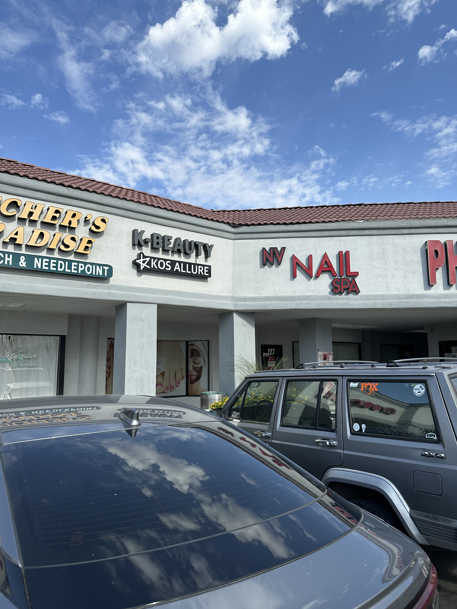

이태훈 · Lee Taehoon
뷰티·커머스 기업 대상 신규 B2B 영업과 마케팅 서비스 제안, 캠페인 운영 경험을 바탕으로 고객의 상황을 파악하고 적합한 솔루션을 연결합니다.
고객에게 먼저 연락하기 전에, 해당 기업의 시장 상황과 제안할 수 있는 가치를 파악하는 방식으로 접근했습니다.
고객에게 제안한 서비스의 실행 과정에도 관여하며 마케팅 담당자의 실제 업무와 데이터를 이해했습니다.


